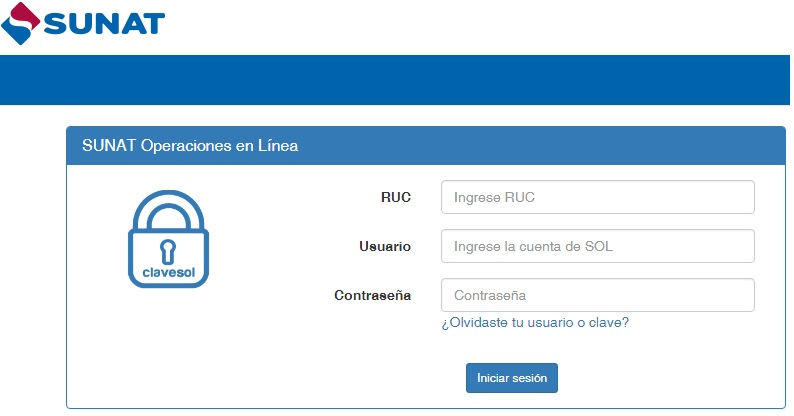
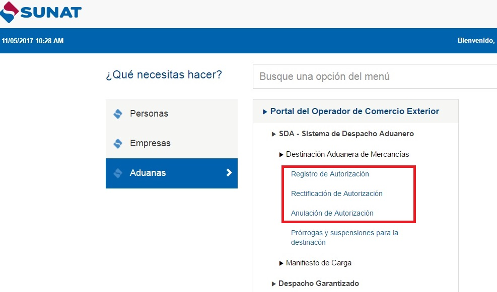
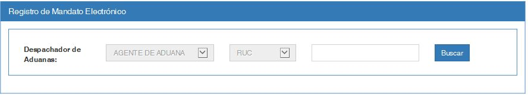

ACCESO AL SISTEMA
Inicio de Sesión en el Sistema de Despacho Aduanero
El contribuyente ingresa con su usuario y clave otorgada por la SUNAT (Ver Fig.01).

Fig.01
Ingreso a la opción: "Registro Mandato Electrónico Post-Levante"
(Ver Fig.02).

Fig.02
Al seleccionar la opción "Registro Autorización", el sistema muestra la pantalla de busqueda de la declaración (Ver Fig.03).

Fig.03